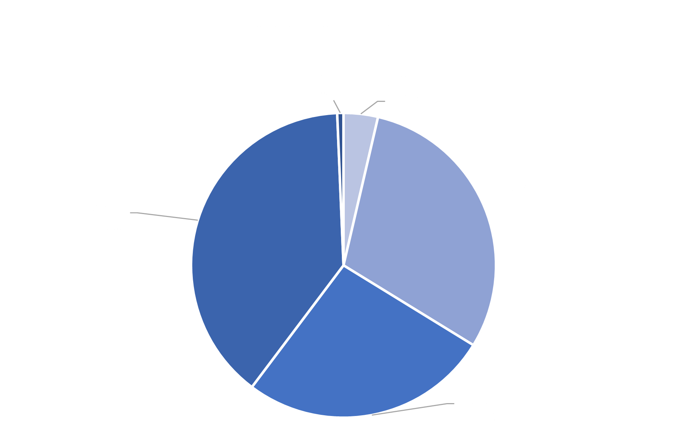
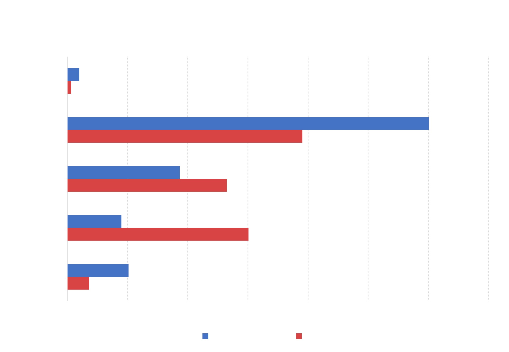
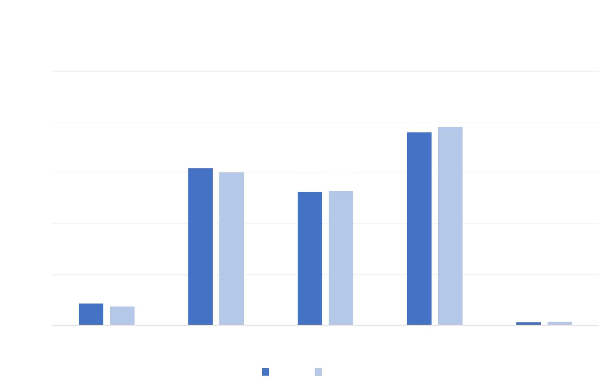

Staten Island Analysis

Staten Island's arrest breakdown differs from the other boroughs. The White demographic group comprises the largest proportion of arrests at 39%, while Black and Hispanic groups fall behind at 30% and 26% respectively.

The chart above compares each demographic group's overall proportion in the composition of the borough with the proportion of arrests on the demographic group within the borough. In Staten Island, Black and Hispanic demographic groups are disporportionately arrested when compared to their overall population proportion. While Black individuals only make up 9% of the overall population, they are 30% of the arrests. Hispanic individuals are just 19% of the total population, but 26% of the total arrests.

There were minimal changes in the arrest proportion across demographic groups from June 2019 to June 2020.